名場面
白浜のパンダ 浜家の名場面
YouTubeで公開した動画から、1場面ずつ取り出しました。押すと、その場面の秒から再生できます。
特集
楓浜(ふうひん)の名場面
65場面・撮影日の古い順。
2021年28場面
名前が決まる前の赤ちゃん楓浜(ふうひん)の寝顔と肉球
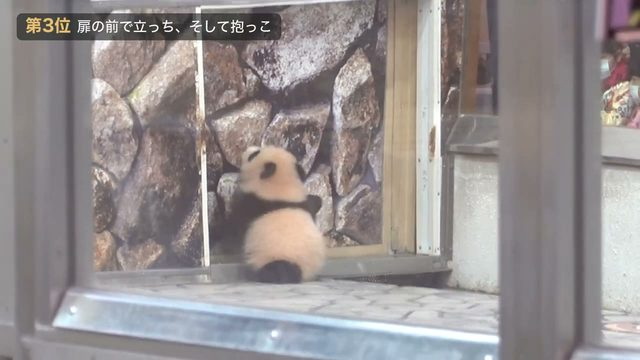
赤ちゃん楓浜(ふうひん)が扉の前で立っち、そして抱っこ
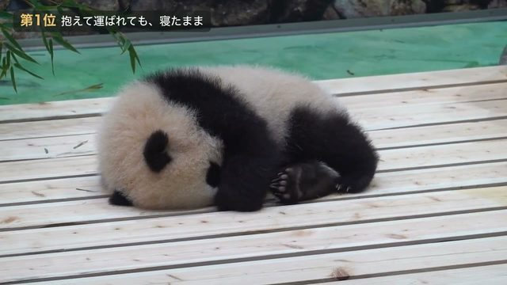
寝たまま運ばれる赤ちゃん楓浜(ふうひん)
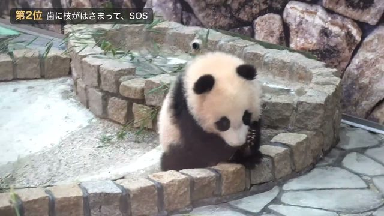
歯に枝がはさまった赤ちゃん楓浜(ふうひん)
はしごを逆さにずり落ちて、しがみつく楓浜(ふうひん)
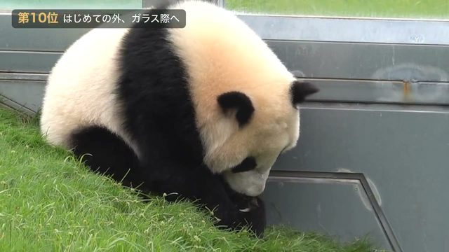
楓浜(ふうひん)はじめての外、芝生を歩いてガラス際へ
お掃除する飼育員さんについて歩き、抱き上げられる楓浜(ふうひん)
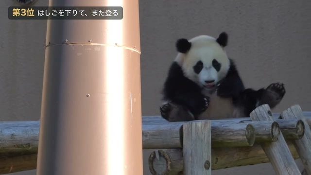
お掃除中の飼育員さんのそばで、はしごを下りてはまた登る楓浜(ふうひん)

楓浜(ふうひん)が小窓からの手に、おなかを見せる
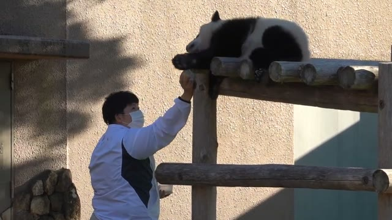
やぐらの上でおててを垂らし、飼育員さんに見守られて寝室へ帰る楓浜(ふうひん)
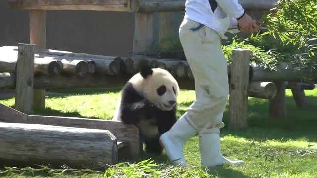
笹を持った飼育員さんの足にしがみつく楓浜(ふうひん)
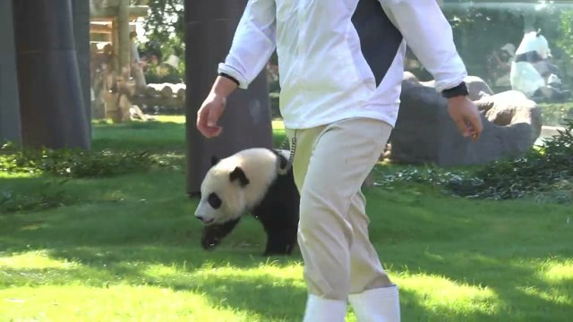
歩き出した飼育員さんを、走って追いかける楓浜(ふうひん)
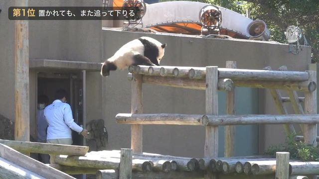
お掃除中の飼育員さんを追いかける楓浜(ふうひん)

楓浜(ふうひん)がお掃除中の飼育員さんの足に飛びつく
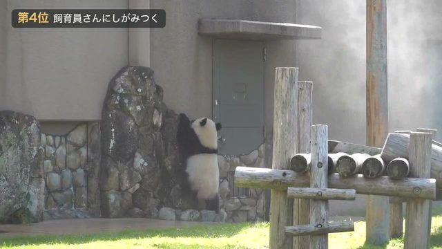
朝のお掃除で、飼育員さんにしがみつく楓浜(ふうひん)

楓浜(ふうひん)が飼育員さんにつかまっては、また逃げる
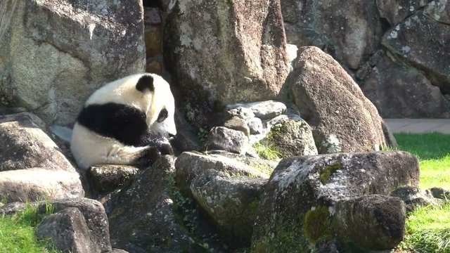
岩場の水辺で、のんびり過ごす楓浜(ふうひん)

楓浜(ふうひん)が飼育員さんと手をつないでお散歩
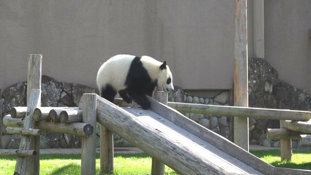
すべり台をおしりから下りる楓浜(ふうひん)
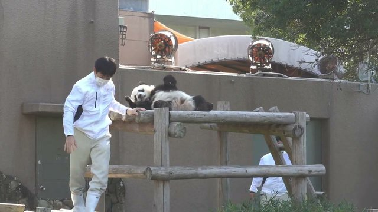
飼育員さんに抱っこされて、やぐらへ戻ってくる楓浜(ふうひん)
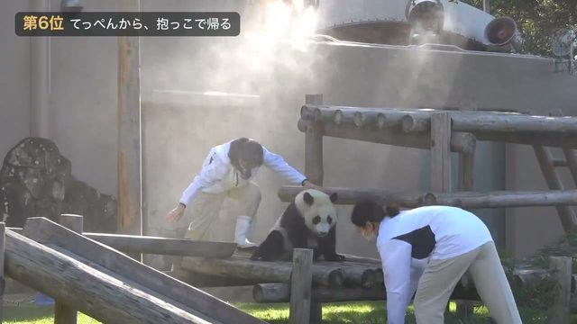
楓浜(ふうひん)がやぐらのてっぺんから、飼育員さんに抱っこで帰る
飼育員さんにしがみついて、抱っこで寝室へ帰る楓浜(ふうひん)

楓浜(ふうひん)が抱っこのあと、飼育員さんからりんごをもらう
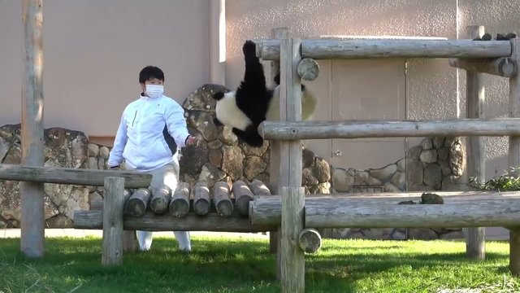
やぐらの上の楓浜(ふうひん)に、飼育員さんがりんごを差し出す
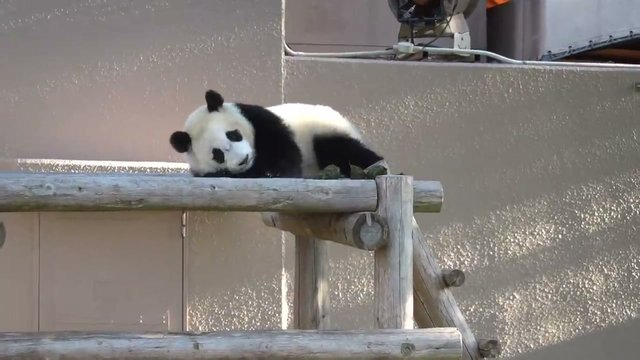
やぐらのてっぺんで、うつぶせになる楓浜(ふうひん)
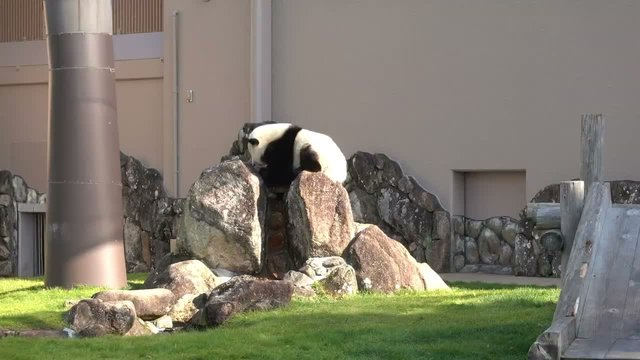
岩山をのぼって、ふもとの水のくぼみに座りこむ楓浜(ふうひん)
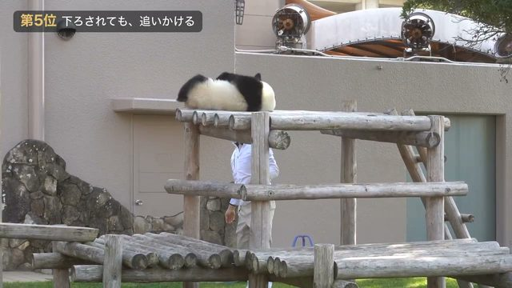
楓浜(ふうひん)がやぐらから下ろされても、また上へ
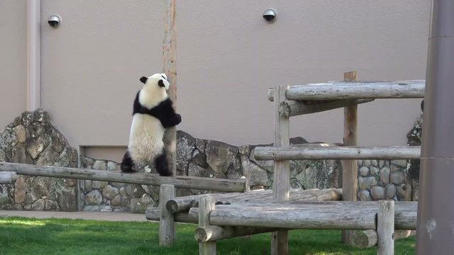
丸太の橋の上で、ポールにつかまって立ち上がる楓浜(ふうひん)
2022年30場面
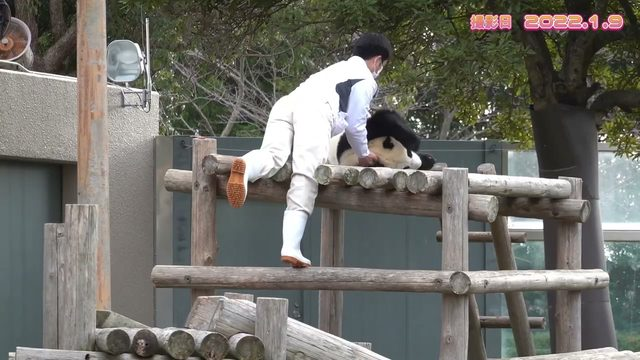
飼育員さんが柵を乗りこえて台の上へ、楓浜(ふうひん)を抱きかかえる
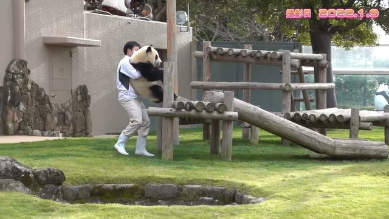
抱っこで運ばれても、また台へもどる楓浜(ふうひん)
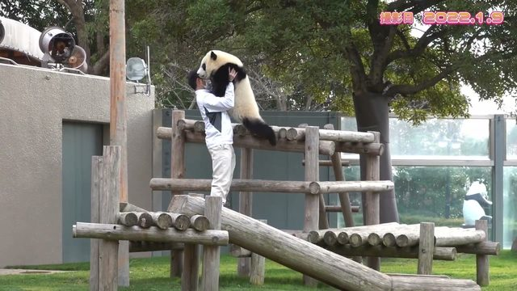
ついに抱っこで台から下ろされる楓浜(ふうひん)
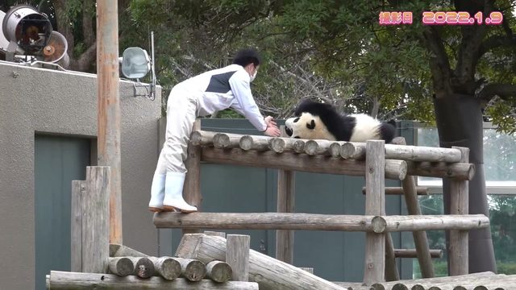
飼育員さんが台によじのぼり、寝そべる楓浜(ふうひん)にそっとふれる
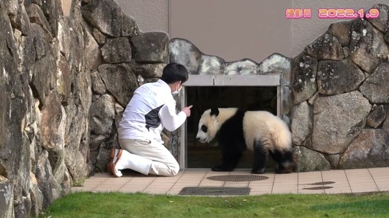
抱っこで寝室の入口へ、ふり返ってから中へ入る楓浜(ふうひん)
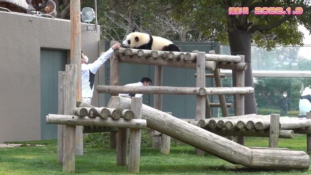
楓浜(ふうひん)が高い台の上から、飼育員さんの笹の準備を見下ろす
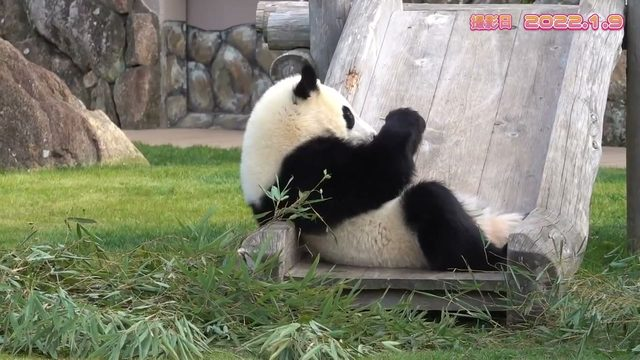
楓浜(ふうひん)が滑り台にもたれて笹を食べる
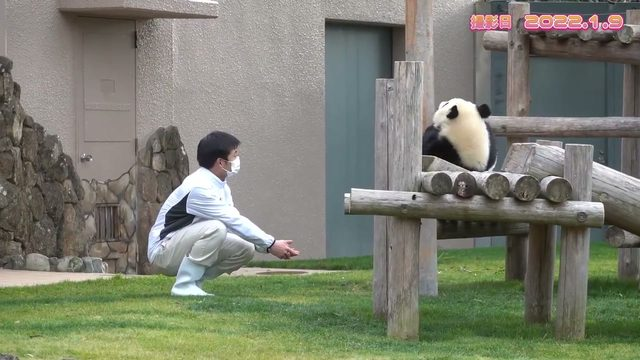
しゃがんで呼ぶ飼育員さんと、低い台のまわりで動かない楓浜(ふうひん)
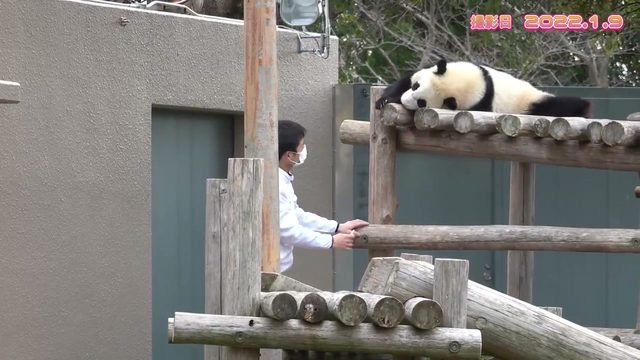
楓浜(ふうひん)が台の上でごろごろ、飼育員さんが手を伸ばしても降りてこない
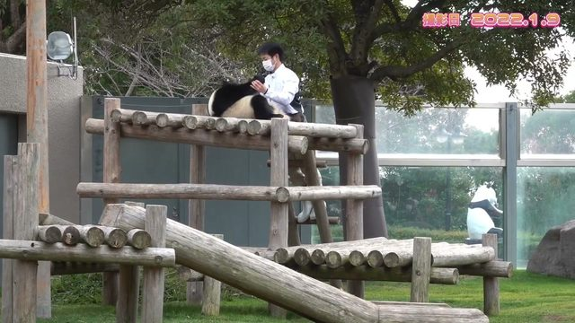
台の上の楓浜(ふうひん)のとなりで、飼育員さんが手をそえる
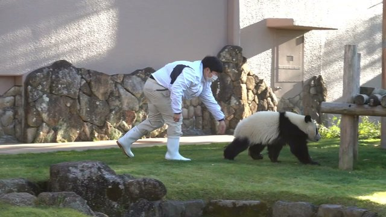
芝生に下ろされても、また台へ戻っていく楓浜(ふうひん)
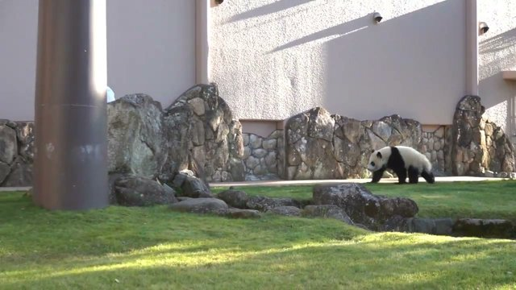
開いた寝室の入り口を通りすぎる楓浜(ふうひん)
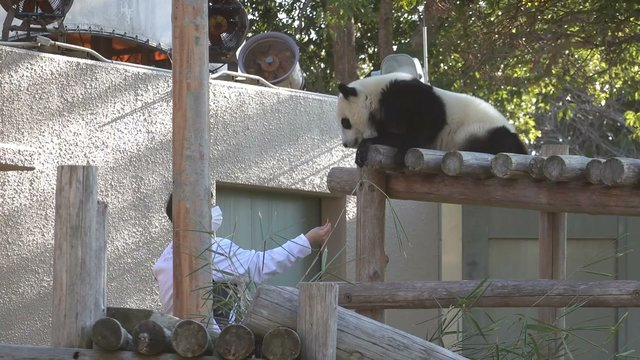
りんごを見せる飼育員さんのそばで、台から下りはじめる楓浜(ふうひん)

楓浜(ふうひん)が飼育員さんと並んで運動場に出てくる
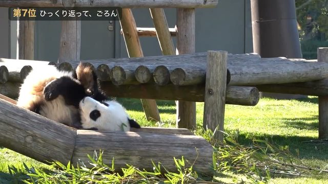
楓浜(ふうひん)が丸太のやぐらでひっくり返って、ごろん
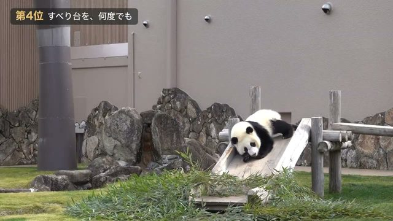
楓浜(ふうひん)がすべり台を何度も腹ばいですべる
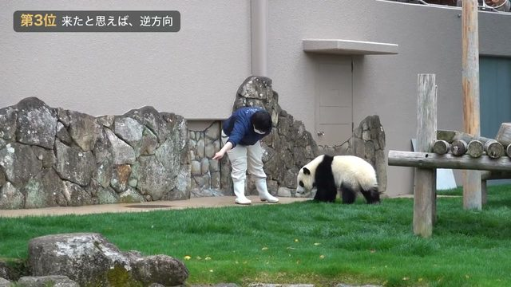
楓浜(ふうひん)が飼育員さんに呼ばれて、逆の方向へ
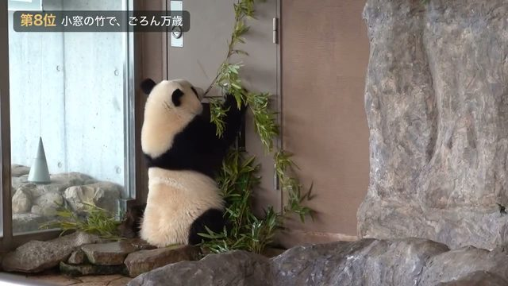
楓浜(ふうひん)が小窓の竹をもらって、ごろん
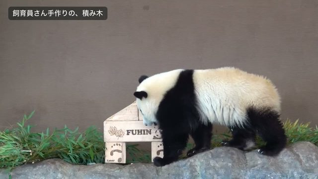
楓浜(ふうひん)のひとり立ちの日、飼育員さん手作りの積み木
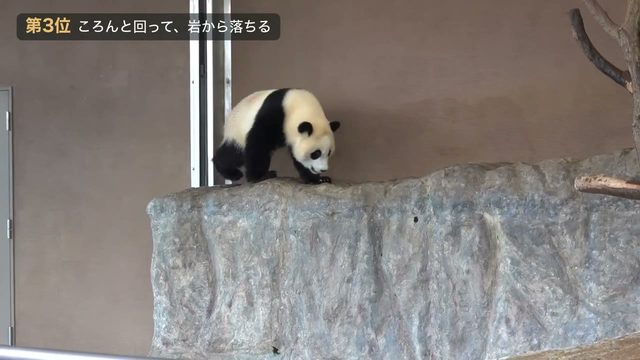
楓浜(ふうひん)が岩の上でころんと回って、下へ落ちる
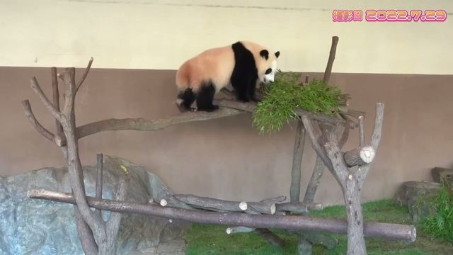
楓浜(ふうひん)が高い枝にのぼって笹のところへ
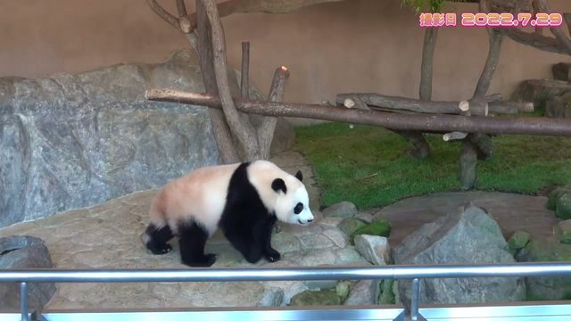
楓浜(ふうひん)が岩場を歩いて丸太の木にのぼる
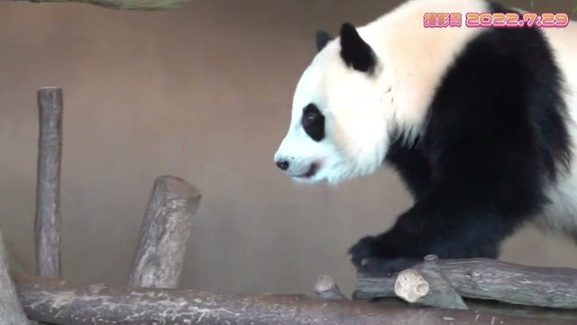
楓浜(ふうひん)が丸太の上を歩く、間近のアップ
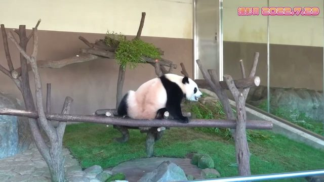
楓浜(ふうひん)が丸太の上を歩いて、つるした笹へ体をのばす
楓浜(ふうひん)が高い枝の上で、笹をかかえてもぐもぐ
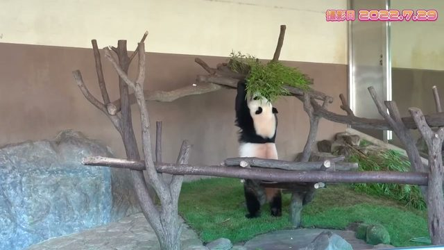
楓浜(ふうひん)が立ち上がって、つるした笹をつかむ
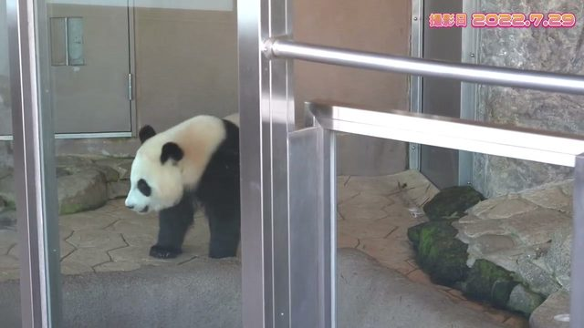
楓浜(ふうひん)が通路を歩いて部屋に登場
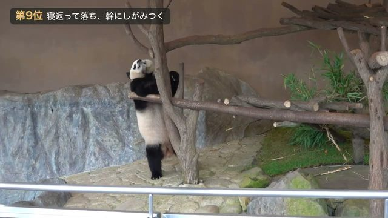
楓浜(ふうひん)が木の上で寝返って落ち、幹にしがみつく
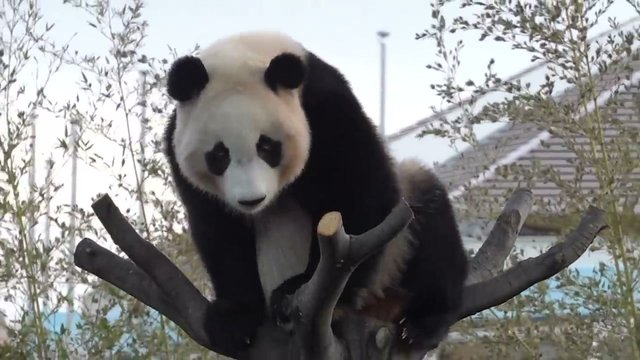
「かえるよ」の声で、木から下りて走る楓浜(ふうひん)
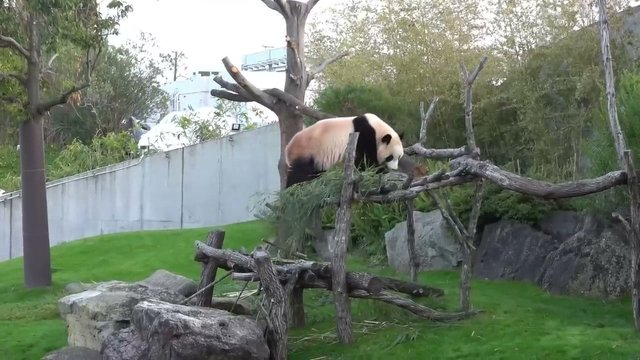
竹をくわえて、高い木のてっぺんをめざす楓浜(ふうひん)
2024年4場面
楓浜(ふうひん)が扉にしがみついて、ばんざい立ち
池に入って、水につかる楓浜(ふうひん)
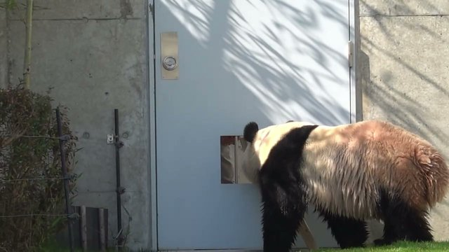
扉の小窓の前で、中をのぞきこむ楓浜(ふうひん)
楓浜(ふうひん)が岩のふちで転がって、とろけるように寝る
2025年3場面
良浜(らうひん)ママと楓浜(ふうひん)
32場面・撮影日の古い順。
2021年18場面
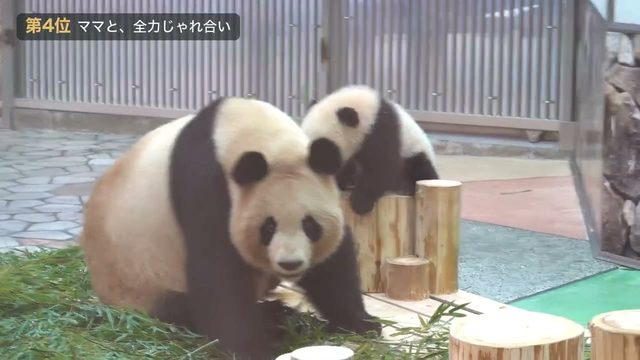
楓浜(ふうひん)と良浜(らうひん)ママの全力じゃれ合い
笹を食べる良浜(らうひん)ママを見つめる赤ちゃん楓浜(ふうひん)
竹を食べるママのそばで、丸太からごろりんする楓浜(ふうひん)
ママをクッションに逆立ちする楓浜(ふうひん)
授乳中に寝落ちした良浜(らうひん)ママと楓浜(ふうひん)
良浜(らうひん)ママに手をのばして鼻と鼻、楓浜(ふうひん)
寝ている良浜(らうひん)ママを見つめつづける楓浜(ふうひん)
良浜(らうひん)ママと立ち上がってじゃれ合う楓浜(ふうひん)
良浜(らうひん)ママにおおいかぶさられて、するりと抜け出す楓浜(ふうひん)
はじめてのお外で、良浜(らうひん)ママに抱きつく楓浜(ふうひん)
スロープを頭から下りて、良浜(らうひん)ママのひざであおむけの楓浜(ふうひん)
はじめての外で、丸太の上の楓浜(ふうひん)に良浜(らうひん)ママが立ち上がって顔を寄せる
はしごから芝生へ、良浜(らうひん)ママと抱き合う楓浜(ふうひん)
すべり台から転がった楓浜(ふうひん)を、良浜(らうひん)ママが抱っこ
竹を食べる良浜(らうひん)ママの上で、逆さにぶら下がる楓浜(ふうひん)
楓浜(ふうひん)と良浜(らうひん)が、はしごから親子でなだれ落ちる
楓浜(ふうひん)が丸太のすべり台を頭からずりずり
楓浜(ふうひん)1歳の誕生日、良浜(らうひん)ママとごろごろ
2022年13場面
楓浜(ふうひん)が良浜(らうひん)の上にのって、台の上でじゃれあう
良浜(らうひん)が楓浜(ふうひん)におおいかぶさって、台の上で組みあう
楓浜(ふうひん)がはしごをのぼって、台の上の良浜(らうひん)のもとへ
楓浜(ふうひん)がはしごをのぼり下り、台の上の良浜(らうひん)と顔を寄せあう
楓浜(ふうひん)が笹を敷いた低い台で遊び、良浜(らうひん)も下りてくる
良浜(らうひん)と楓浜(ふうひん)が芝生で組みあって転がる
滑り台の下で、良浜(らうひん)と楓浜(ふうひん)が顔を寄せてじゃれあう
楓浜(ふうひん)が滑り台の上にのぼり、下では良浜(らうひん)が笹を食べる
楓浜(ふうひん)が引き戸をこじ開ける
楓浜(ふうひん)と良浜(らうひん)ママが、同じポーズで座る
楓浜(ふうひん)がやぐらで逆さにぶら下がって、ぽとん
楓浜(ふうひん)と良浜(らうひん)、ひとり立ち5日前の親子
ひとり立ち前、楓浜(ふうひん)と良浜(らうひん)が親子で見られた最後の日
2023年1場面
結浜(ゆいひん)の名場面
6場面・撮影日の古い順。
彩浜(さいひん)の名場面
6場面・撮影日の古い順。